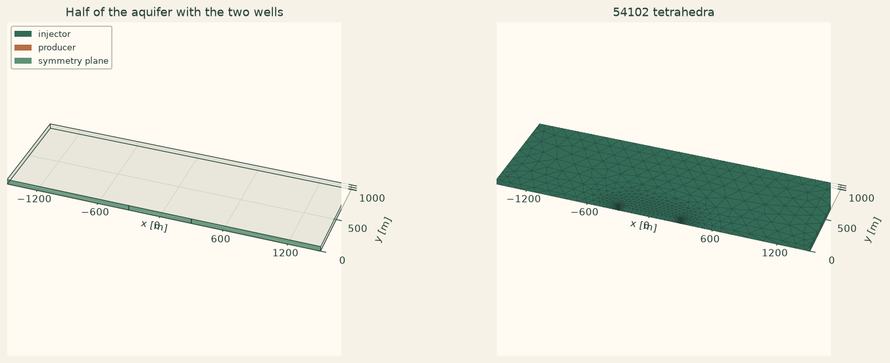

Docs › Examples › Thermal breakthrough of a geothermal doublet
Porous media flow, heat transport · 3D
Thermal breakthrough of a geothermal doublet
Cold water reinjected into a hot aquifer spreads towards the production well 600 m away and starts to cool it after fifteen to twenty years.
Run locally with OneSimulation. The example downloads are free. Running them requires an activated runtime. Runtime Alpha 0.2.1a7 · CPython 3.13 on macOS (Apple Silicon), Ubuntu 22.04 (x86-64), and Windows x64. Installation and activation · View pilot plans. Scope of the reference checks.

What it computes
OneSimulation reads half of the aquifer with both wells from a STEP file, meshes it with tetrahedra graded from 1.5 m at the well walls to 150 m far away, and solves the stationary Darcy pressure with linear finite elements. Its Darcy velocity drives the transient heat transport of the cold front over sixty years with one-year implicit steps in a quasi-stationary coupling.
What it checks
The pressure difference between the wells is 8.89 bar against 9.03 bar of the doublet form of the Thiem equation; a quarter of the production is cooled after 23.8 years against 23.9 years of the streamline solution, while conduction and dispersion bring the first cooling forward (5 % after 15.1 instead of 18.8 years) and spread the tail (half after 47.7 instead of 55.7 years).
Geometry
The notebook starts at the import of the CAD file geothermal_doublet.step: STEP (AP242), readable by any CAD program, with the names of the faces that the boundary conditions use. Put it next to the notebook.

The geometry script
The script geothermal_doublet_geometry.py builds the geometry with the CAD objects of OneSimulation and writes the file. Change a dimension there, run it, and run the notebook again.
"""Geometry of the OneSimulation example "Thermal breakthrough of a geothermal doublet".
Builds one half of a confined aquifer, 3000 m long, 1000 m wide (half of 2000 m) and 50 m thick,
cut by the vertical symmetry plane through the two wells, with the CAD objects of OneSimulation.
The injection and the production well, radius 0.5 m (screen with gravel pack) and 600 m apart, penetrate the whole
thickness and are cut out as half cylinders. The part is written to geothermal_doublet.step; its
faces are named injector.outer_wall, producer.outer_wall, y_min (symmetry plane) and the box faces
x_min, x_max, y_max, z_min, z_max.
"""
from onesim.cad.d3 import Box, Cylinder
length, half_width, thickness, spacing, radius = 3000.0, 1000.0, 50.0, 600.0, 0.5
well = lambda x, name: Cylinder(
radius=radius, length=thickness + 2.0, origin=(x, 0.0, -1.0)
).named(name)
aquifer = Box(
length=length, width=half_width, height=thickness, origin=(-length / 2, 0.0, 0.0)
)
(aquifer - well(-spacing / 2, "injector") - well(spacing / 2, "producer")).save(
"geothermal_doublet.step"
)The notebook
The complete notebook, cell by cell. Run it to produce the figures and the comparison printout.
A geothermal doublet circulates water through a hot aquifer: a production well pumps it up, a heat exchanger cools it, an injection well returns it. The cold water spreads from the injector and, after some years, reaches the producer: the thermal breakthrough, after which the production temperature falls. Its timing sets the well spacing.
Darcy flow and heat transport in the aquifer:
with the heat capacity \((\rho c)_a\) of the saturated rock and \((\rho c)_w\) of the water. The cold front therefore moves with \(\mathbf q\,(\rho c)_w/(\rho c)_a\), slower than the water.
Setup. A confined aquifer 50 m thick, permeability 1 darcy (\(10^{-12}\) m²), water viscosity 1 mPa s, \((\rho c)_a=2.6\) MJ/(m³ K), \((\rho c)_w=4.18\) MJ/(m³ K), thermal conductivity 10 W/(m K) (rock conduction plus thermal dispersion). Wells of 0.5 m radius (screen with gravel pack), 600 m apart, circulating \(Q=72\) m³/h. Temperatures are the cooling relative to the injection temperature difference, 0 in the untouched aquifer and 1 for injected water. One half of the aquifer (the vertical plane through both wells is a symmetry plane) comes from geothermal_doublet.step, written by geothermal_doublet_geometry.py with the CAD objects of OneSimulation.
| face | flow | heat | |---|---|---| | injector.outer_wall | inflow \(Q/2\) over the half well | injected water, \(\Delta T=1\) | | producer.outer_wall | pressure 0 | outflow | | y_min (symmetry), outer faces, top and base | no flow | insulated |
References. For fully penetrating wells in a large aquifer the potential flow of a source and a sink gives the pressure difference \(\Delta p=Q\mu\ln(D/r_w)/(\pi kH)\) (doublet form of the Thiem equation, e.g. J. Bear, Hydraulics of Groundwater, McGraw-Hill 1979). The streamlines are circles through both wells; the one leaving the injector at the angle \(\theta\) to the line between the wells arrives after
which gives the first breakthrough \(t_B=\frac{\pi}{3}\frac{(\rho c)_a}{(\rho c)_w}\frac{HD^2}{Q}\) (A.C. Gringarten, J.P. Sauty, J. Geophys. Res. 80, 1975, 4956-4962). As the injected water spreads evenly over the angles, the cooled fraction of the production is \(\theta/\pi\) at the time \(t(\theta)\), without conduction.
import numpy as np
from onesim.cad.d2 import Plane
from onesim.cad.exchange import load
from onesim.materials import ThermalFluid
from onesim.meshing import DistanceRefinement, TetrahedralMesher
from onesim.numerics import Numerics
from onesim.numerics.coupled_systems import QuasiStationaryCoupling
from onesim.numerics.fem import FiniteElement, GalerkinAdvection, Lagrange
from onesim.numerics.field_transfer import FieldInterpolation
from onesim.numerics.linear import SparseDirect
from onesim.numerics.nonlinear import FixedPoint, Newton
from onesim.numerics.time import BackwardEuler
from onesim.physics.heat_transfer import (
ConvectiveHeatTransfer,
FixedTemperature,
HeatFlux,
)
from onesim.physics.hydrodynamics import (
DarcyFlow,
DarcyFluxBoundary,
DarcyPressureBoundary,
)
from onesim.simulation import Problem, Simulation
from onesim.simulation.field_connections import FieldCoupling
from onesim.simulation.initial_conditions import InitialValue
from onesim.visualization import plots, theme
theme.set()Geometry and mesh
load returns the half aquifer with its named faces. Tetrahedra of 1.5 m at the well walls, 40 m in the band between the wells where the cold front travels, and up to 150 m far away.
aquifer = load("geothermal_doublet.step")
faces = aquifer.boundaries
thickness, spacing, radius = 50.0, 600.0, 0.5
line = np.column_stack(
(
np.linspace(-spacing / 2, spacing / 2, 61),
np.zeros(61),
np.full(61, thickness / 2),
)
)
mesh = TetrahedralMesher(
target_size=150.0,
refinements=(
DistanceRefinement(
source=faces["injector.outer_wall"] | faces["producer.outer_wall"],
target_size=1.5,
far=60.0,
far_size=40.0,
),
DistanceRefinement(source=line, target_size=40.0, near=150.0, far=500.0),
),
).generate(aquifer)
view = plots.Camera(elevation=35, azimuth=-70)
fig = plots.figure(1, 2, size=(16, 6))
plots.geometry(
aquifer,
selection={
"injector": faces["injector.outer_wall"],
"producer": faces["producer.outer_wall"],
"symmetry plane": faces.y_min,
},
labels=False,
camera=view,
title="Half of the aquifer with the two wells",
ax=fig[0],
)
plots.mesh(
mesh,
groups=("all",),
legend=False,
camera=view,
title=f"{mesh.cell_count} tetrahedra",
ax=fig[1],
)
plots.show()Model
The Darcy flow is stationary; the heat equation is transient. Dividing it by the capacity ratio turns it into a heat equation with the water's capacity in the scaled time \(\tau=t\,(\rho c)_w/(\rho c)_a\), which the model runs; physical times are \(\tau\) times the ratio. The model uses linear tetrahedra with second-order quadrature and implicit time steps of one year. Each time step passes the Darcy velocity to the heat equation; the flow does not depend on temperature here, so the second sweep of the fixed-point iteration only confirms convergence.
permeability, viscosity, rate, rock, water_capacity = (
1e-12,
1e-3,
72.0 / 3600.0,
2.6e6,
4.18e6,
)
ratio, year = rock / water_capacity, 365.25 * 86400.0
water = ThermalFluid(
density=1000.0,
dynamic_viscosity=viscosity,
thermal_conductivity=10.0,
specific_heat_capacity=water_capacity / 1000.0,
)
darcy = DarcyFlow(domain=aquifer.volume, permeability=permeability, material=water)
heat = ConvectiveHeatTransfer(domain=aquifer.volume, material=water, velocity=None)
others = faces.all - faces["injector.outer_wall"] - faces["producer.outer_wall"]
problem = Problem(
name="geothermal doublet",
geometry=aquifer,
physics=(darcy, heat),
boundary_conditions=(
DarcyFluxBoundary(
physics=darcy,
boundary=faces["injector.outer_wall"],
flux=-rate / (2 * np.pi * radius * thickness),
),
DarcyPressureBoundary(
physics=darcy, boundary=faces["producer.outer_wall"], value=0.0
),
DarcyFluxBoundary(physics=darcy, boundary=others, flux=0.0),
FixedTemperature(
physics=heat, boundary=faces["injector.outer_wall"], value=1.0
),
HeatFlux(
physics=heat, boundary=others | faces["producer.outer_wall"], value=0.0
),
),
initial_conditions=(InitialValue(heat.temperature, 0.0),),
couplings=(
FieldCoupling(
source=darcy.darcy_velocity,
target=heat.advecting_velocity,
transfer=FieldInterpolation(),
),
),
)
result = Simulation(
problem=problem,
mesh={darcy: mesh, heat: mesh},
numerics={
darcy: Numerics(
spatial=FiniteElement(element=Lagrange(order=1), quadrature_order=2),
linear_solver=SparseDirect(),
),
heat: Numerics(
spatial=FiniteElement(
element=Lagrange(order=1),
quadrature_order=2,
convection=GalerkinAdvection(),
),
time_integrator=BackwardEuler(),
nonlinear_solver=Newton(
linear_solver=SparseDirect(),
absolute_tolerance=1e-9,
relative_tolerance=1e-9,
),
),
},
coupling_solver=QuasiStationaryCoupling(
transient_systems=(heat,),
stationary_systems=(darcy,),
iteration=FixedPoint(
relative_tolerance=1e-8, absolute_tolerance=1e-12, maximum_iterations=3
),
),
).run(start_time=0.0, end_time=60 * year / ratio, time_step=1.0 * year / ratio)
pressure, temperature = result.field(darcy.pressure), result.field(heat.temperature)
times = np.asarray(temperature.times) * ratio / yearComparison with the references
The pressure at the injector wall against the doublet formula; the production temperature is the mean over a ring of points around the producer at mid-depth.
ring = np.column_stack(
(
spacing / 2 + 1.0 * np.cos(np.linspace(0.05, np.pi - 0.05, 12)),
1.0 * np.sin(np.linspace(0.05, np.pi - 0.05, 12)),
np.full(12, thickness / 2),
)
)
production = np.array(
[temperature.evaluate(ring, time=t).mean() for t in temperature.times]
)
theta = np.linspace(1e-3, np.pi - 1e-3, 2000)
arrival = (
np.pi
* thickness
* spacing**2
/ rate
* ratio
* (1 - theta / np.tan(theta))
/ np.sin(theta) ** 2
/ year
)
injector_pressure = pressure.evaluate(
[[-spacing / 2 - radius - 1e-3, 1e-3, thickness / 2]], time=temperature.times[-1]
)[0]
print(
f"pressure difference between the wells: simulation {injector_pressure / 1e5:.2f} bar, "
f"doublet formula {rate * viscosity * np.log(spacing / radius) / (np.pi * permeability * thickness) / 1e5:.2f} bar"
)
print(f"first breakthrough without conduction: t_B = {arrival.min():.1f} years")
print(
f"{'cooled fraction':>16s} {'time, simulation [a]':>21s} {'streamline solution [a]':>24s}"
)
for fraction in (0.05, 0.1, 0.25, 0.5):
print(
f"{fraction:16.2f} {np.interp(fraction, production, times):21.1f} {np.interp(fraction, theta / np.pi, arrival):24.1f}"
)Figure
The cooling in the mid-plane of the aquifer after 10 and 30 years, and the production temperature over time against the streamline solution.
fig = plots.figure(1, 3, size=(20, 5.5))
for k, years in enumerate((10, 30)):
plots.section(
temperature,
time=temperature.times[years],
plane=Plane(origin=(0, 0, thickness / 2), normal=(0, 0, 1)),
limits=(0, 1),
contours=5,
xlimits=(-700, 700),
ylimits=(0, 600),
label="cooling ΔT / ΔT_inj",
title=f"Mid-plane after {years} years",
ax=fig[k],
)
plots.line(
y={"simulation": (times, production)},
reference={"streamline solution, no conduction": (arrival, theta / np.pi)},
xlimits=(0, 60),
ylimits=(0, 1),
xlabel="time [years]",
ylabel="cooling of the production ΔT / ΔT_inj",
title="Thermal breakthrough at the producer",
legend="upper left",
ax=fig[2],
)
plots.show()Going further
Increase the spacing in geothermal_doublet_geometry.py and write the STEP file again: the breakthrough time grows with the square of the spacing. Add confining layers above and below the aquifer as further parts: the heat they conduct delays the cooling.